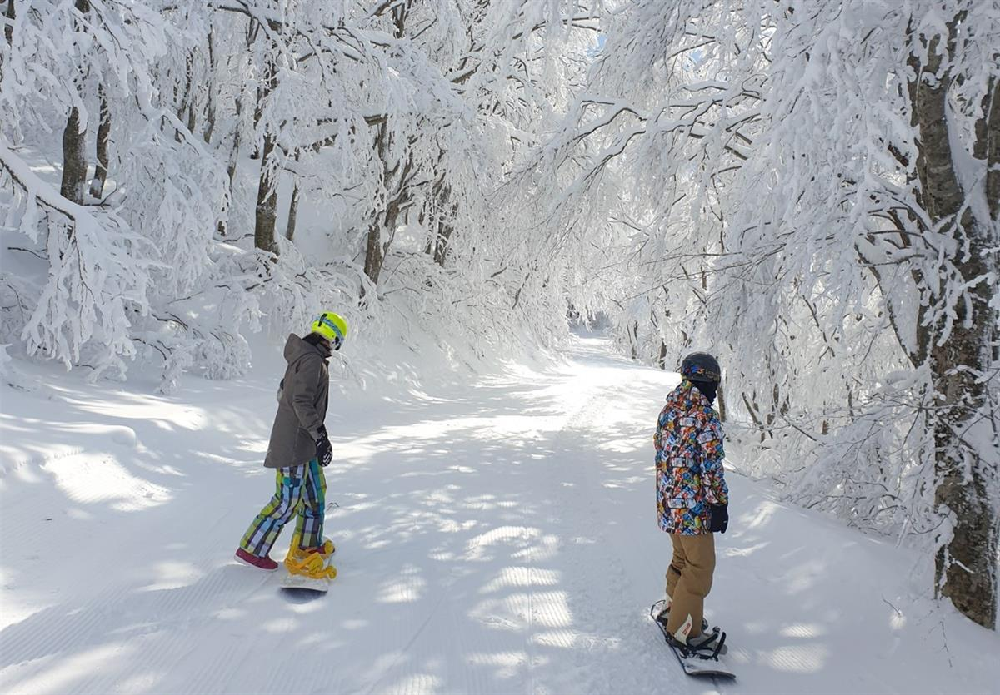
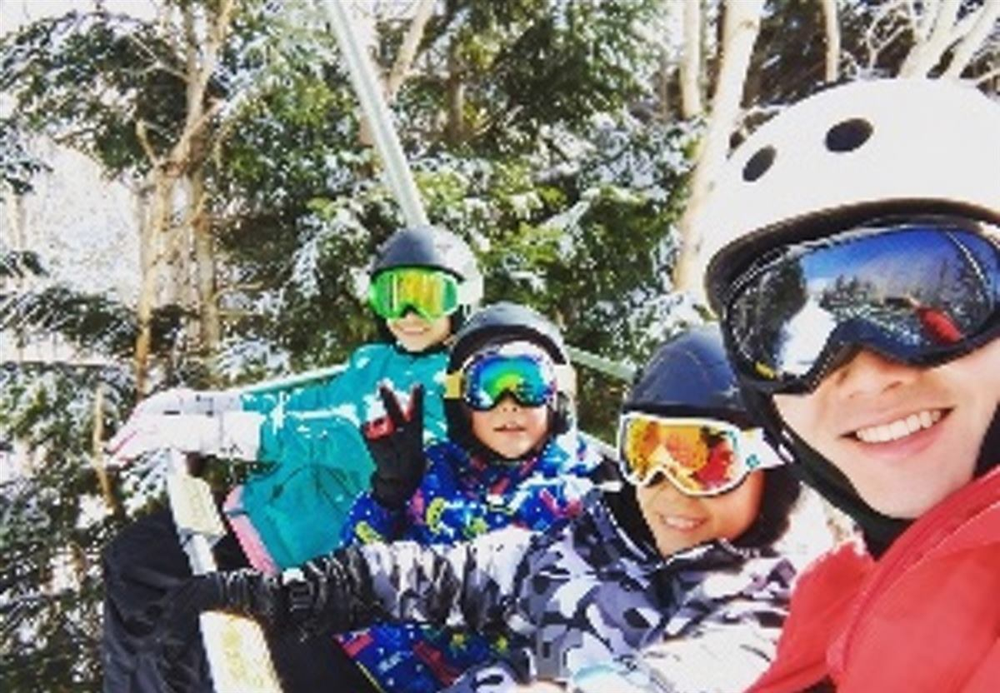

2026–27 SERVICES & PRICING
我們的服務
精選服務項目與待正式確認的初版參考價格。Social Member 與 Gold Member 在指定服務享有相同會員價格。



※ 上述金額為待正式確認的初版報價。雪票、裝備、交通、保險及其他費用是否包含，將於正式方案公告時逐項說明。
實際服務地點與內容須依各雪場規範、商業活動相關許可確認結果、天候及可預約狀況安排；送出諮詢不代表預約成立。
會員價格資訊銜接
若適用服務提供經確認的會員優惠，將於諮詢時依條件說明。
Social／Gold 會員優惠
兩種會員在指定服務享有相同會員價格；其他內容依會員頁公告。
依需求提供服務建議
依日期、人數、經驗與感興趣的項目，討論適合的安排與報價。
費用不包含項目除另有明確說明外
- 雪票
- 裝備租借
- 交通
- 住宿
- 餐飲
- 保險
- 其他第三方費用
價格依日期、場地、服務安排、人數與實際狀況調整，實際報價以確認後為準。
FAQ
出發前，
你可能想知道
完全沒有滑雪經驗，也適合嗎？
可以。諮詢時請告訴我們是否第一次接觸雪地、同行人數與年齡組成，我們會依實際條件討論合適的安排。
雙板與單板應該怎麼選？
兩者有不同的入門感受。你可以依旅行目標、過往運動經驗與同行者選擇；還不確定時，也可先在諮詢中討論。
目前可以在哪些北海道雪場預約？
服務雪場與商業活動相關許可仍在確認中，將依各雪場規範及實際可預約狀況安排。目前不預先承諾特定雪場。
頁面價格已經確定了嗎？
目前顯示的是待正式確認的初版報價，最終費用與包含項目將在諮詢時依服務內容確認。
可以直接在網站付款嗎？
目前網站不提供會員登入或線上付款。請先透過聯絡管道提出需求，後續流程將由專人說明。